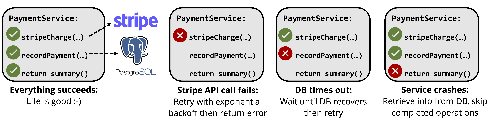

Databases are becoming more and more important to modern applications. In particular, we've observed that many applications, especially cloud-hosted web services and microservices, have essentially no local persistent state and instead store everything in a database or in multiple data stores. As database researchers, this seems to us like a big opportunity. Modern cloud-hosted databases, from RDS to Aurora to CockroachDB, are incredibly powerful tools, offering incredible reliabilility, high availability, and transactional semantics. We think that using these properties, it should be easy to build database-backed applications that are reliable, highly available, and observable.
Right now, though, it isn't. We think that a big part of why is that infrastructure doesn't know about the database. In other words, there's an impedance mismatch between modern applications, which store all their state in these wonderful data stores, and deployment infrastructure like Kubernetes, Fargate, or Lambda, which treat the application as a black box, are agnostic to database semantics, and punt responsibility for managing application state to the developer. This mismatch is most severe in two areas: reliability and data governance/security.
In terms of reliability, the problem is that developers have to do the hard work of keeping application state consistent. Many applications access multiple data stores and additionally have side effects in external APIs. For example, a payment service might make a request to the Stripe API, then record the result in Postgres. In such cases, reliability is really a consistency problem: we must make sure that the Stripe API call completes, and that its result is always recorded in Postgres. To do this, as we show below, we have to appropriately handle many different types of failure: the application could fail, a database call could fail, or a Stripe API call could fail.

In theory, it should be easy to handle these failures automatically because both Stripe and Postgres provide strong semantics: the Stripe API is idempotent and Postgres is transactional. In practice though, developers have to write custom retry and recovery logic for each application, which is difficult and gets more difficult as applications get more complex.
In terms of governance and security, the problem is that it's hard to track who does what to application state and data. This has become especially important over the last few years. Laws like GDPR and CCPA impose strict requirements on what applications can do with data, for example requiring that personally identifiable information only be used for well-defined purposes or that it is only stored in data centers physically located in certain countries. Regular data breaches remind us how important but hard it is to keep customer data safe. In theory, database-aware infrastructure could help with these issues, using knowledge of application and database semantics to enforce data usage rules and alert a security team in case of unusual data accesses. In practice, though, developers must solve these problems themselves.
As part of the DBOS project at Stanford and MIT, we've been researching what it would mean to build systems and infrastructure that's aware of the database. We've built or are building systems such as a database-oriented function-as-a-service platform (Apiary: arXiv, GitHub), a new cross-data store transactions protocol (slides), and a transaction-oriented debugger (CIDR '23). The reason we're writing this blog post is because we want to learn from you, developers who encounter these problems in the real world, about where to go next. We want to know:
- How true are our hypotheses? Are most of your applications database-oriented?
- Are the problems we're describing real? Are they important?
- How do you currently solve these problems? How hard are these solutions to implement? Can they solve everything?
- What are we missing?